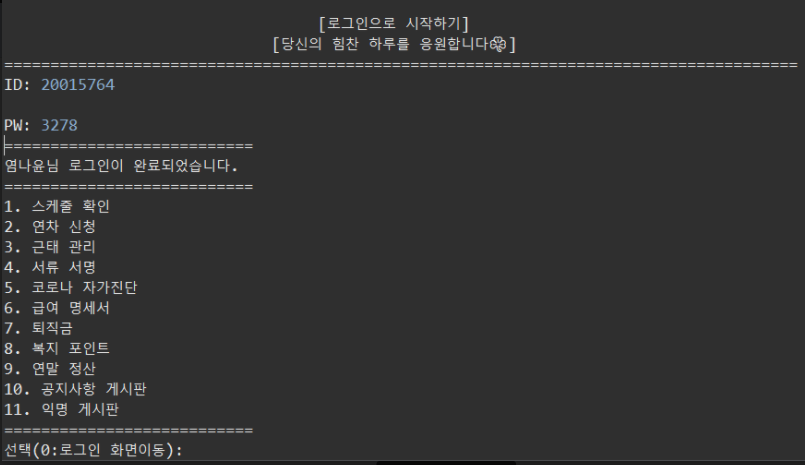
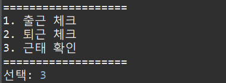
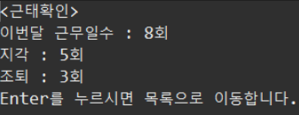
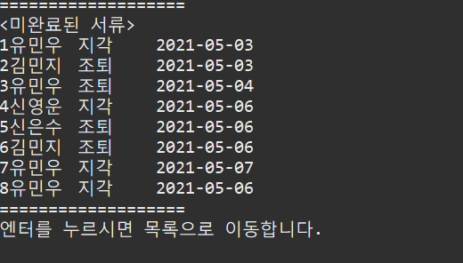
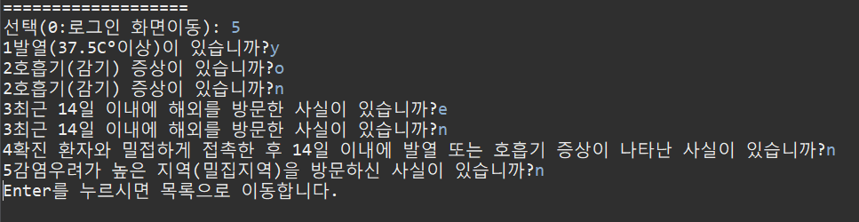
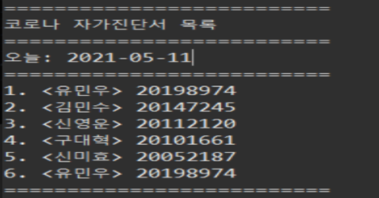
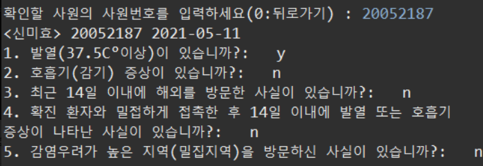
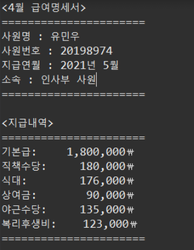
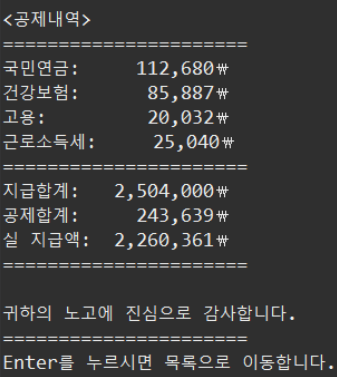
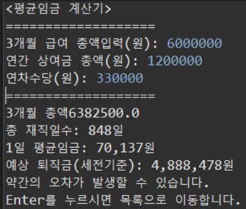

Java Project
파일 입출력 기반의 데이터 처리 자바 콘솔 프로젝트(기업 전산 관리 시스템 구현)
회사 직원들의 인적사항, 일정, 급여 등을 한눈에 확인할 수 있고
기존의 전산 관리 시스템(연차, 게시판, 스케줄 등)과 유사한 시스템을 이용하는 프로그램이 프로젝트에서 저의 담당업무 결과물들을 소개하겠습니다.

로그인 화면 구성
직원 및 관리자의 로그인창이며 직원으로 로그인했을때 보이는 화면입니다.
사용기술: BufferedReader, ArrayList, BufferedWriter
직원 더미에 있는 직원번호 =아이디 / 전화번호 뒷번호 = 비밀번호 조건 결과값이 true값이여야만(일치해야만) 로그인이 됩니다.
근태 확인(직원)
직원이 로그인을 하고 근태 관리 메뉴에 들어가게 되면 나오는 화면입니다.
해당화면에서 3.근태 확인으로 이동시 해당 월의 근태를 확인 할 수 있습니다.
사용기술: BufferedReader, ArrayList, BufferedWriter
출퇴근 시간을 체크하면 now.get() 메소드를 이용해 출퇴근시간이 기록되는 출퇴근더미를 통해
지각/조퇴/근무일수의 숫자를 카운트해주는 기능입니다.
 서류 서명(직원)
직원들이 자신의 지각 혹은 조퇴 기록을 확인하고 서명을 할 수 있는 화면입니다.
사용기술: BufferedReader, ArrayList, BufferedWriter
근태관리에서 지각이나 조퇴인 데이터가 생기면 직원서류서명더미에 데이터를 저장하고
이를 통해 로그인된 해당 직원의 지각,조퇴 데이터만 출력하여 직원이 서명을 하고
서명을 안하거나 서명이 잘못된 데이터(해당 직원의 이름으로 입력되지 않는 경우)는
직원서류서명더미에 남겨 관리자가 관리하게 할 수 있는 기능입니다.

결제 서류-근태 확인(관리자)
관리자가 확인할 수 있게 서명이 제대로 완료되지 않은 데이터 목록들을이 출력되는 화면입니다.
사용기술: BufferedReader, ArrayList
직원서류더미에 남겨진 서명이 잘못되거나 서명이 안된 데이터들을 관리자가 확인 할 수 있는 기능입니다.
코로나 자가진단(직원)
코로나 자가진단의 질문의 목록들이 출력된 화면입니다.
사용기술: BufferedReader, ArrayList, BufferedWriter
코로나 자가진단 문항 데이터가 저장된 파일더미를 통해 질문을 가져와 직원이 y(Y) 또는 n(N)으로 입력하게 합니다.
이는 유효성검사로 y,n로 답해지지않으면 재귀메소드로 다시 질문으로 돌아가 질문이 반복되게 됩니다.
코로나 자가진단이 끝난후 모든 데이터들은 관리자가 볼 수 있게 COVID완료 더미에 저장돼서
관리자가 직원들의 상태를 확인을 할 수 있는 기능입니다.
결제 서류-코로나 자가진단 확인(관리자)
코로나 자가진단의 결과에 이상이 있는 직원의 목록과 해당 직원의 질문결과를 출력해주는 화면입니다.
사용기술: BufferedReader, ArrayList
코로나 자가진단이 끝난 모든 직원들의 데이터가 저장된 COVID완료더미에서 이상이 있는 (n을 포함한) 답변을 가진
직원들의 목록을 뽑아와 출력합니다. 그리고 그 직원 목록에서 열람을 원하는 직원의 직원번호를 입력하면
코로나 자가진단의 모든 질문의 답변을 볼 수 있게 하는 기능입니다.
 급여명세서(직원)
직원이 월별로 자신이 받게 되는 급여를 상세하게 출력하는 화면입니다.
사용기술: BufferedReader, ArrayList
직원 더미의 데이터를 통해 개인정보, 직책수당,기본급을 출력할 수 있고
출퇴근 더미로 야근수당,출근 횟수를 통해 식대를 계산해 지난달의 급여명세서를 확인할 수 있는 기능입니다.
 퇴직금(직원)
직원의 정보를 입력하면 예상퇴직금과 평균 임금을 출력하여 보여주는 화면입니다.
사용기술: BufferedReader, ArrayList, BufferedWriter
직원의 재직일수 얻기 위해서 tick값을 이용해 3개월간 재직일수를 구해준다.
직원이 입력한 값과 재직일 수를 통해 퇴직금계산식으로 예상 퇴직금을 출력해주는 기능입니다.
프로젝트를 통해서 느낀점..
쌍용교육센터를 다니면서 첫번째 프로젝트를 진행했습니다.
자바 프로그래밍에서 대표적인 IDE인 eclipse를 사용해 기업 전산 관리 시스템을 구현했습니다.
자바를 배우면서 코딩하는 재미도 느끼게됐고 산출물이 잘나오면 희열감도 느낄 수 있었습니다.
하지만 한 오류가 해결이 계속 안되는 경우도 있었습니다.
이런 경우에는 같은 팀원들에게 코드를 보여주며 바로 피드백을 받았습니다.
오류를 혼자 계속 찾는것보다 팀원들과 보는것이 시간을 단축시켜준다는것을 느낄 수 있었습니다.
이 프로젝트를 진행하면서 팀원들간에 커뮤니케이션이 중요하다는 것을 느꼈고
각각의 담당업무를 다같이 합치면서 문제점을 해결해가며 재밌게 프로젝트를 진행했습니다.
마지막 페이지 입니다.
끝까지 봐주셔서 감사합니다.